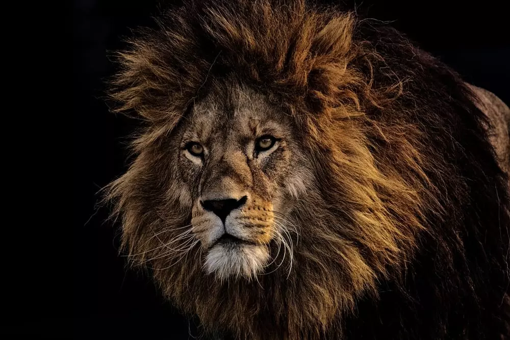
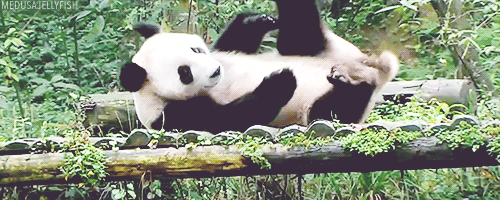

აქ გაიგებთ საინტერესო ინფორმაციას სხვადასხვა ცხოველების შესახებ.
ძაღლები არიან ერთგული ჭკვიანი და მოსიყვარულე შინაური ცხოველები.
მათ გამოიყენებენ ადამიანების დასახმარებლად . ასევე ისენი ეხმარებიან სამაშველო გუნდებს როგორებიცაა პოლიცი სახანძრო დახმარება და ასშ.
ძაღლები ასევე კარგი შინაური ცხოველები არიან ისენი ძალიან კარგად უგებენ ბავშვებს და არიან ოჯახზე მორგებულები.
კატები ცნობილები არიან დამოუკიდებელი ბუნებით.
მათ ძირითადად უყვართ სიმარტოვე თუმცა ადამიანებთან ყოფნაც სიამოვნებთ.
სპილოები მსოფლიოში ყველაზე დიდი ხმელეთის ცხოველია.
ისენი არიან ძალიან ჭკვიანები და აქვთ კარგი მეხსიერება
სპილოები ცხოვრობენ ჯგუფებად და იცავენ ერთმანეთს.

ლომი ხშირად მოიხსენიება როგორც ცხოველთა მეფე.
ისინი ცხოვრობენ ჯგუფებად, მათ ჯგუფს ქვია პრაიდი.
ლომები ძლიერი და მამაცი მტაცებლები არიან.

პანდები ცხოვრობენ ჩინეთის მთიან რეგიონებში და ჭამენ ბამბუკს.
მათი წყნარი ხასიათი ბევრს მოსწონს.
პანდები ბუნების დაცვის სიმბოლოდ ითვლება.